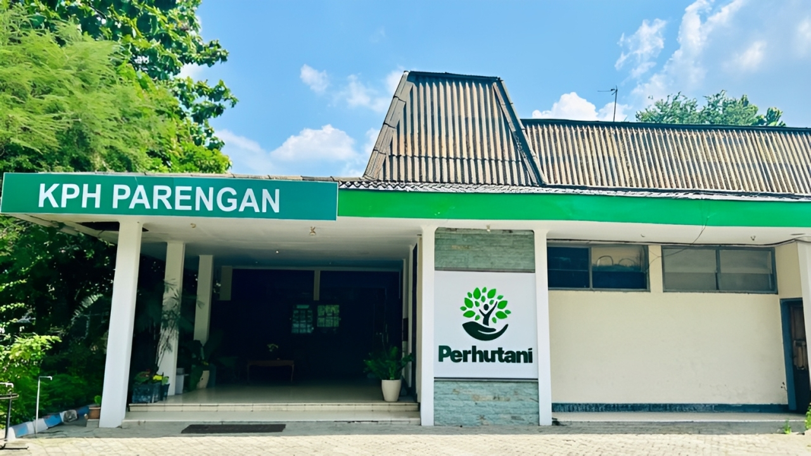

Mengelola Hutan dengan Integritas
Bersama Masyarakat, Mewujudkan Harmoni Alam

Perum Perhutani Kesatuan Pemangkuan Hutan (KPH) Parengan adalah salah satu unit manajemen di wilayah Perum Perhutani Divisi Regional Jawa Timur.Luas wilayah kerja KPH Parengan berdasarkan PP 72 2010 Perusahaan Umum Kehutanan Negara seluas 17.633,30 Ha berada pada wilayah administratif pemerintahan kabupaten dan kota yaitu Kabupaten Tuban (14.781,10 Ha), Provinsi Jawa Timur dan Kabupaten Bojonegoro (2.852,20 Ha) Provinsi Jawa Timur.